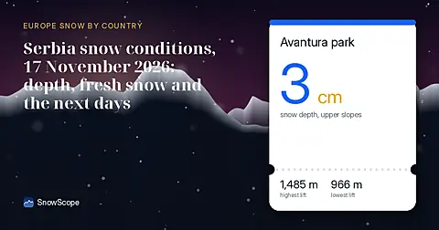

Serbia snow report: snow depth, new snow and the week ahead
In Serbia about 2,630 km² of high ground is white today, 12 % of the country's mapped mountains and hills. That is 470 km² less than yesterday. The deepest resort is Tornik with 18 cm on its upper slopes. Up to 23 cm of new snow could fall on the snowiest slopes in the week ahead.
See the live snow forecast for Tornik in the SnowScope appSnow depth, powder alerts and the 3D map, free.Today at a glance
| White area | 2,630 km² |
|---|---|
| Share of the high ground | 12 % |
| Most new snow in 24 h | 0 cm |
| Most new snow in 3 days | 1 cm |
| Next 3 days (snowiest slopes) | 23 cm |
| Next 7 days | 23 cm |
| Mostly white from | 1,700 m |
| Resorts with snow on top | 7 of 9 |
The last seven days
On 21 November about 10 km² was white; today it is 2,630 km².
The snow cover grew by 2,620 km² over these days.
The biggest three-day snowfall of the period reached 4 cm (to 23 November).
Snowiest resorts today
Tornik leads with 18 cm on its upper slopes.
Then come Stara planina (11 cm), Kopaonik (8 cm), Divcibare (5 cm) and Ски центар Жари (2 cm).
| Resort | Upper slopes | New, 3 days | Next 3 days | Top |
|---|---|---|---|---|
| Tornik | 18 cm | 0 cm | 18 cm | 1,486 m |
| Stara planina | 11 cm | 0 cm | 23 cm | 1,754 m |
| Kopaonik | 8 cm | 3 cm | 25 cm | 1,975 m |
| Divcibare | 5 cm | 0 cm | 17 cm | 1,088 m |
| Ски центар Жари | 2 cm | 1 cm | 16 cm | 1,383 m |
Where the snow is coming next
Up to 23 cm is expected on the snowiest slopes in the next three days, and up to 23 cm over the week.
The snowiest day looks like Saturday 28 November, with up to 19 cm.
The last three days brought the most fresh snow to Kopaonik.
The second week could add up to 10 cm where it snows most.
Snow by height
Height by height: 500-1,000 m: 0 cm on average, 6 % white; 1,000-1,500 m: 1 cm on average, 22 % white; 1,500-2,000 m: 2 cm on average, 45 % white.
Most of the ground is white from about 1,700 m up.
Planning a trip
Between 1,500 m and 2,000 m the cover is patchy, about 45 % white: expect grass and stones between the snow.
The resorts with the highest lifts are the safest bet: Kopaonik (1,975 m), Stara planina (1,754 m) and Tornik (1,486 m).
If you can choose the day, go after Saturday 28 November: the fresh snow then has time to settle and the roads to be cleared.
Day by day
- Friday 27 November · 2,630 km² white, up to 1 cm of new snow in three days, deepest Tornik (18 cm)
- Thursday 26 November · 2,770 km² white, up to 1 cm of new snow in three days, deepest Tornik (21 cm)
- Wednesday 25 November · 630 km² white, up to 4 cm of new snow in three days, deepest Kopaonik (12 cm)
- Tuesday 24 November · 1,380 km² white, up to 4 cm of new snow in three days, deepest Stara planina (14 cm)
- Monday 23 November · 5,450 km² white, up to 4 cm of new snow in three days, deepest Kopaonik (10 cm)
- Sunday 22 November · 10 km² white, up to 1 cm of new snow in three days
- Saturday 21 November · 10 km² white, up to 1 cm of new snow in three days
Questions and answers
Is there snow in Serbia right now?
Yes. About 2,630 km² of high ground is white, 12 % of the mapped mountains. The deepest resort is Tornik with 18 cm on its upper slopes.
Where is the most snow in Serbia today?
Tornik leads with 18 cm on its upper slopes. Then come Stara planina (11 cm), Kopaonik (8 cm) and Divcibare (5 cm).
Will it snow in Serbia this week?
Up to 23 cm is expected on the snowiest slopes in the next three days, and up to 23 cm over the week. The snowiest day looks like Saturday 28 November, with up to 19 cm.
From what height is there snow in Serbia?
Most of the ground is white from about 1,700 m up.
How much new snow fell in Serbia in the last three days?
Up to 1 cm on the snowiest slopes, 0 cm of it in the last 24 hours. The last three days brought the most fresh snow to Kopaonik.
How many ski resorts in Serbia have snow?
7 of the 9 resorts we follow have snow on their upper slopes today. Snow on top does not mean the lifts are open: check the resort before you go.
Stories about Serbia

Serbia has 30 km² of snow cover on 17 November. Only Avantura park holds 3 cm. Up to 8 cm is forecast for the week ahead, with 6 cm possible on 23 November.

Three of Serbia's nine resorts hold measurable snow on 16 November. Avantura park tops the ranking with 28 cm depth at its station.